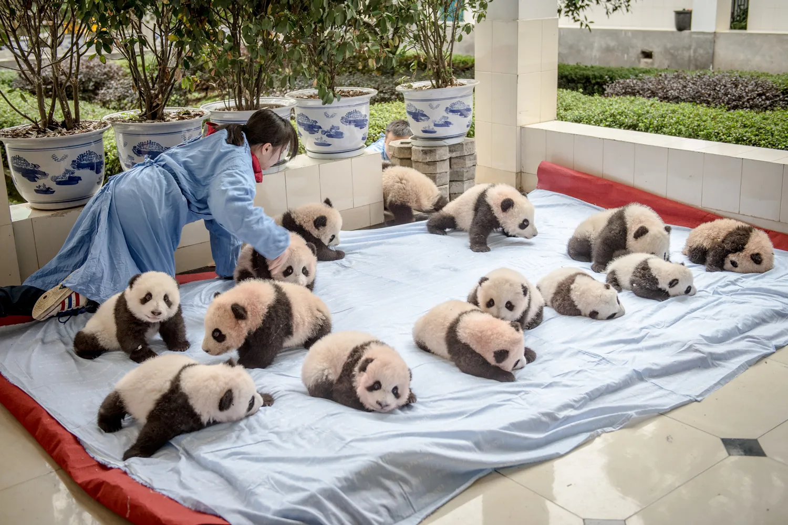
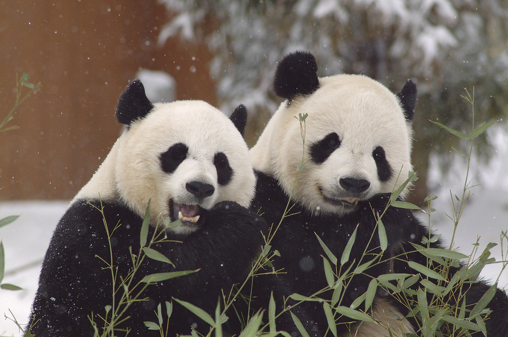
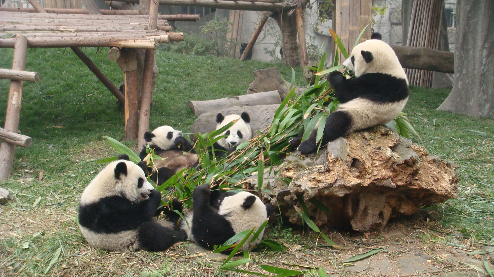
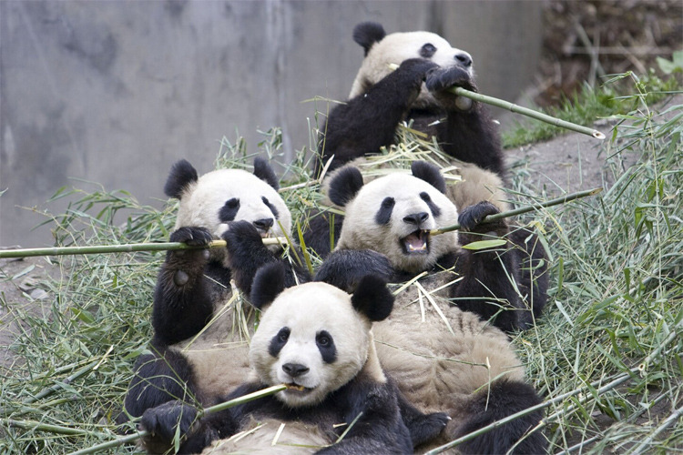
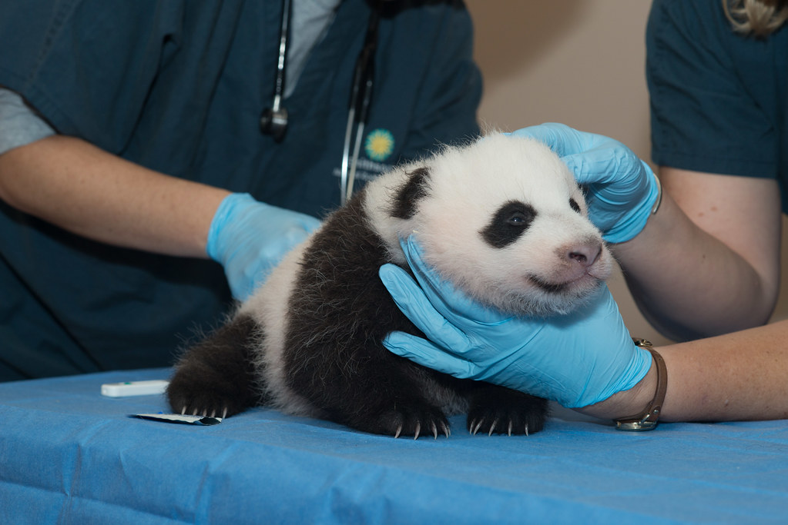
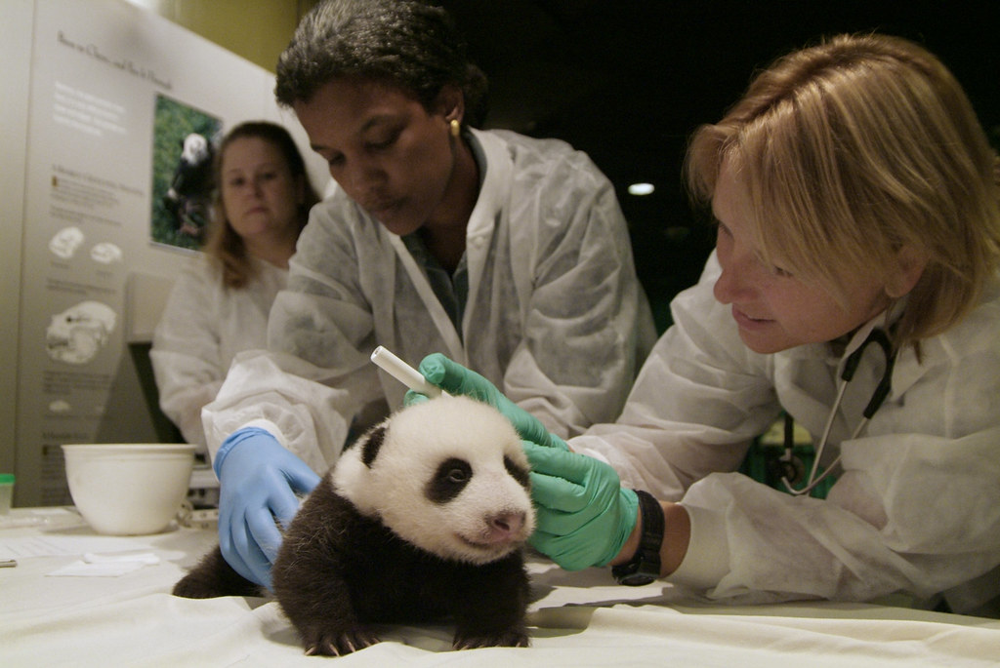
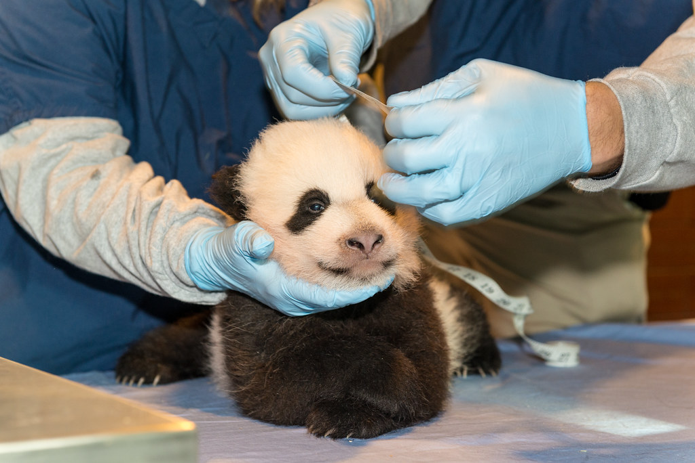
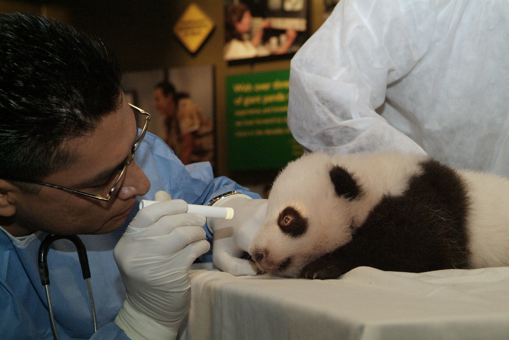

|  |  |
|  |  |
Protecting and preserving the natural habitat of giant pandas is crucial. This involves creating protected areas, such as national parks and resrves, where pandas can live and thrive.
Ensuring a steady supply of bamboo is essential for pandas' survival. Conservation efforts focus on preserving bamboo forests and promoting sustainable bamboo management practices.
Giant pandas have a low reproductive rate, so breeding programs play a vital role in their conservation. Zoos and breeding centers work to increase the panda population through controlled breeding and artifical insemination tecniques.
|  |  |
|  |  |
Providing proper medical care is essential for the well-being of giant pandas. Veterinarians and animal experts monitor their health, provide vaccinations, and treat any illnesses or injuries.
Conducting scientific research helps us better understand giant pandas and their behaviors. Monitoring their population, habitat, and genetic diversity allow us to make informed conservation decisions.
Raising awareness about the importance of panda conservation is crucial. Educating the public, both locally and globally, about the threats pandas face and the actions we can take to protect them helps garner support for conservation efforts.
By implementing these measures, we can ensure the well-being and survival of giant pandas for many generations. Let's do our best to keep these giant pandas alive and well for a very long time!